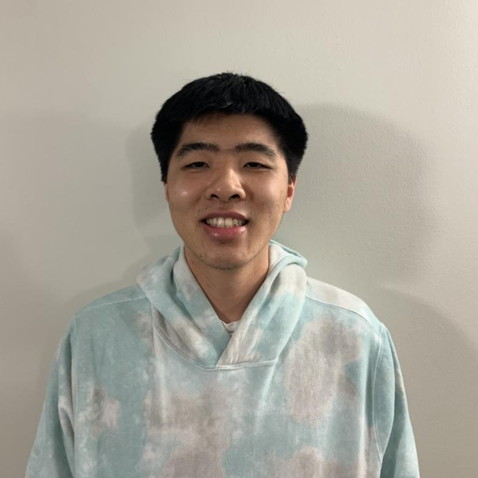
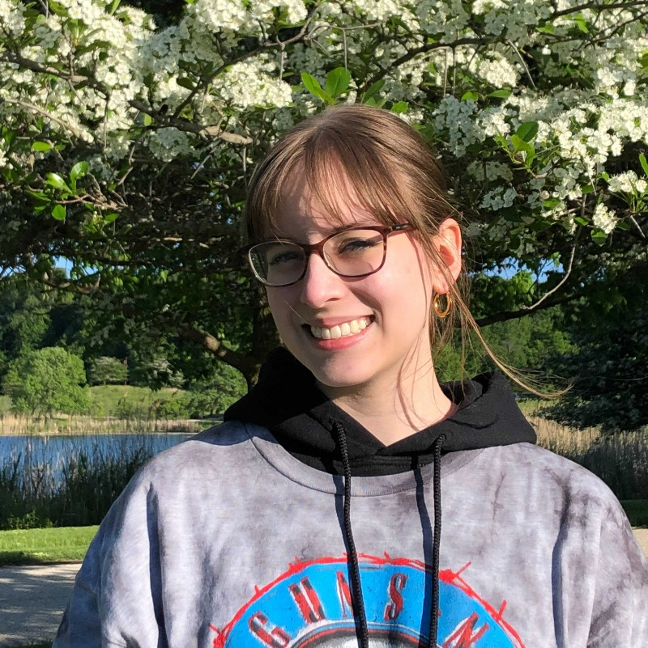
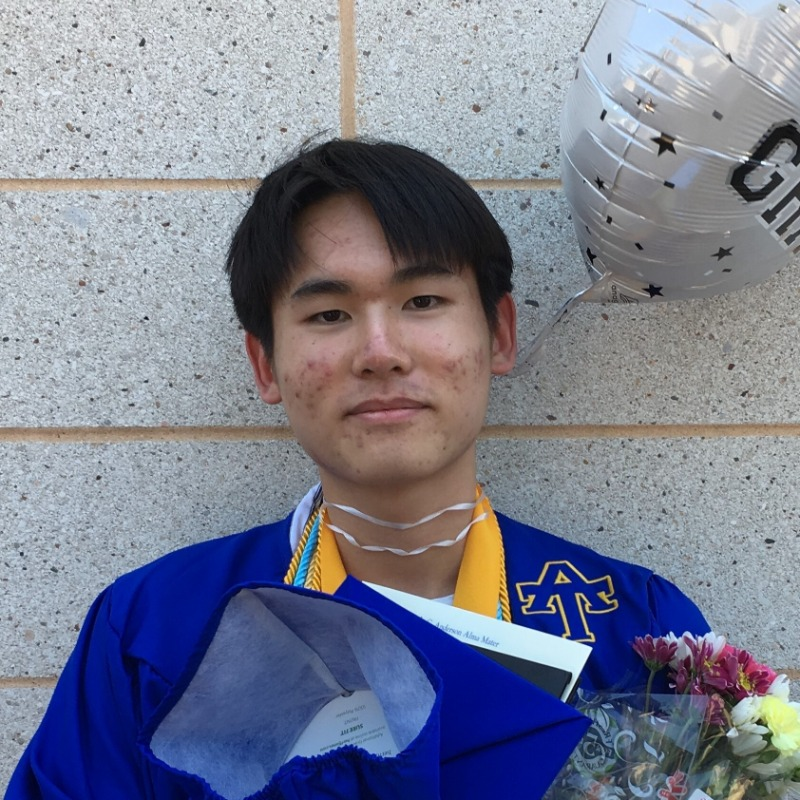

Kevin Mendoza Tudares

Kevin is a fourth year Computer Science student in McCormick. He is interested in information
systems and data engineering as well as motivating younger students to pursue STEM. In his
free time, Kevin enjoys listening to music, going to concerts, and watching movies.
Sydney Simmons

Sydney is a fourth year McCormick student studying Computer Science. She is interested in
improving students’ educational experiences through technology, as well as mentorship. Therefore,
she works with the FamJam team in the lab. On campus, Sydney is a part of the National Society
of Black Engineers (NSBE) as the Treasurer, a mentor in the Black Mentorship Program, and is
involved in the New Student and Family Programs.
Isabelle Mallwitz

Isabelle (Z, for short) is a fourth year in McCormick studying computer science, learning sciences,
and design. They put together their own major as part of the McCormick Integrated Engineering Studies
program in order to study the intersection of CS and LS in more detail. They're interested in developing
tools for learning, encouraging interest in STEM in young people, and taking down boundaries to education.
Outside of the classroom, Z is an active mental health advocate, a practicing artist, and a big fan of
tabletop games.
Priya Kini

Priya Kini is a fourth year in McCormick majoring in Computer Science with a
minor in cognitive science. She is interested in using computer science to facilitate
artistic learning, as well as fostering STEM education in under-represented communities.
Apart from engineering, Priya enjoys dancing for Northwestern’s Bhangra team and
exploring Chicago with her friends.
Marc Jiang

Marc is a senior at Northwestern University studying Computer Science
in McCormick. He is from Chicago and is interested in how computer science can be used
for education, reading emotions, and the health industry.
He is currently helping with the Learning with Minecraft, FamJam, and WRC projects.
Nathaniel Hardy

Nathaniel is a fourth year student studying Computer Science. He is interested
in using Compute Science to mitigate issues of societal inequality. On campus,
he is involved in The Collective along with organizing Black Men LEAD events.
His interests include watching basketball, learning about machine learning, and
video game development. In the lab, he works as a part of the Blinc team.
Seth May

Seth is a fourth year in McCormick studying Computer Engineering. He is interested
in exploring learning opportunities with Minecraft, and seeing how that can translate
into building STEM interest among students. In his free time, Seth enjoys watching
Northwestern sports, exploring 3D printing, and exploring internet rabbit holes.
Alexander Redding

Alexander is a fourth year Computer Science major from central Illinois. He is interested
in exploring general ways in which technology can build equity. In his free time, Alexander
enjoys tinkering with vintage electronics, playing Tetris, and learning about new technologies.
Jeremy Libretti-River
Jeremy is a third year computer science student in McCormick. He is interested in finding opportunities
to apply computer science in creative ways and using technology to reduce social inequality. In his free time,
Jeremy enjoys discovering new music and learning about political theory.
Naomi Wu

Naomi is a sophomore studying Computer Science from Chinatown, Chicago. She is interested in
the intersections between social justice and computer science, with particular interest in how
education, race, and gender affect accessibility to technology. In her free time, she enjoys biking,
thrifting, and buying little plants.
Marco Wang
Marco is a second year at Northwestern University from Hong Kong currently studying computer science
and physics in WCAS. He is interested in exploring how machine learning can be applied in education
and related fields. In his free time, he enjoys learning about new technologies, playing squash
and video games. He is currently part of the Blinc team in the lab.
Sengdao Inthavong
Sengdao is a second year McCormick student majoring in Computer Science with a minor in Data Science.
He is interested in the crossroads of data visualization and human-computer interaction, as well as how
enhanced insights can be used to solve the challenges of online communities. Outside of class, Sengdao is
the Webmaster for Northwestern's chapter of the Institute of Electrical and Electronics Engineers (IEEE NU)
and runs an online scholastic-based chess league.
Justin Jia

Justin is a junoir in TIILT working on the Learning with Minecraft project. Originally from Los Angeles, California,
Justin is currently studying Computer Engineering in McCormick. In his free time, Justin likes to dwell on Reddit,
watch anime, and work on his Animal Crossing Island
Isaac Kim
Isaac is a sophomore at Northwestern University majoring in Computer Science in McCormick
and minoring in music composition in Bienen. Alongside TIILT, he is a member of the electrical
subteam of Northwestern’s Formula Racing club (NFR). He is involved in the Multicraft project.
Sophie Rollins

Sophie is a third year studying Computer Science in McCormick. She is interested in using
technology to empower underrepresented groups and promote inclusivity. On campus, she plans
events as part of the Professional Development committee of Society of Women Engineers
and is a McCormick PA. In her free time, Sophie enjoys playing Stardew Valley and sustainably
producing clothes for herself and her friends.
Andy Ko

Kyung Myung (Andy) is an incoming junior at Purdue University studying computer science.
He is interested in how machine learning technologies can bring positive effects to individuals
and society, overcoming current barriers. He is currently working on the Multicraft project.